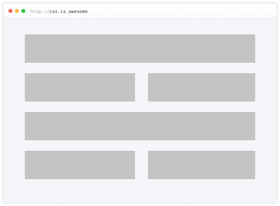
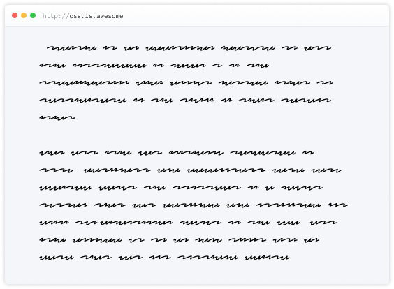
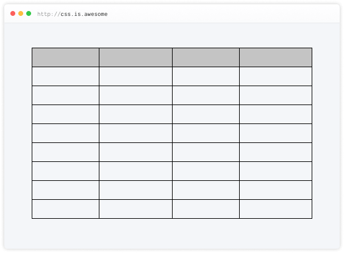
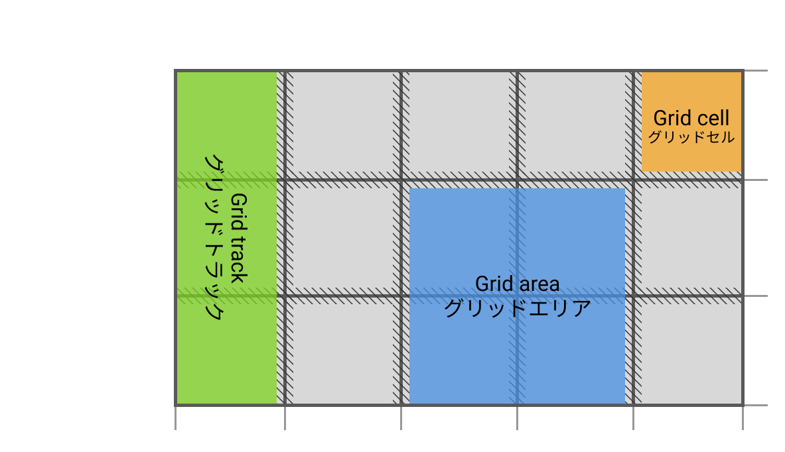
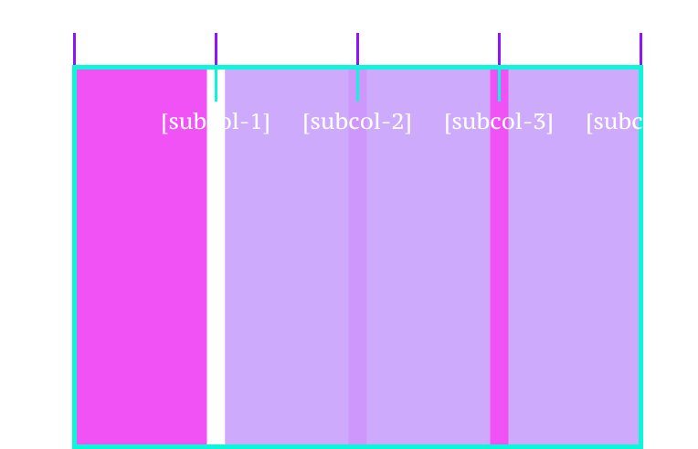

Making CSS from Good to Great
The Power of Subgrid
Web layouts over the years


ブロックレイアウト
Block layout
designed for laying out documents
インラインレイアウト
Inline layout
designed for laying out text
テーブルレイアウト
Table layout
designed for laying out 2D data in a tabular format
絶対位置指定
Positioned layout
designed for very explicit positioning without much regard for other elements in the document
Flexible box layout
describes a CSS box model optimised for user interface design and designed for laying out more complex applications and webpages
一次元のレイアウトモデルとして、またインターフェース中のアイテム間でスペースの分配をする機能と強力な位置合わせをする機能を提供するものとして設計されました
Grid layout
Defines a two-dimensional grid-based layout system, optimised for user interface design.
二次元グリッドシステムを CSS にもたらします
Why is CSS grid special?
“Grid works from the container in,
other layout methods start with the item”
—Rachel Andrew
Layout technique: inline-block
Item A
Item B
Item C
Item D
Item E
Item F
Layout technique: float
Item A
Item B
Item C
Item D
Item E
Item F
Layout technique: flex
Item A
Item B
Item C
Item D
Item E
Item F
Grid is the only layout technique that establishes a relationship between rows and columns of grid items.
グリッドは、グリッド項目の行と列の間の関係を確立する唯一のレイアウト手法です。
Basics of CSS Grid
Define your grid.
グリッドコンテナーを作成する

Place items in the grid.
グリッドにアイテムを配置

Grid terminology

Browser support for Grid (Level 1)
Using DevTools to learn Grid
Live demoWhat's in Grid Level 2?
-
Level 2 expands Grid by:
- adding “subgrid” capabilities for nested grids to participate in the sizing of their parent grids
- aspect-ratio–controlled gutters
Why do we need subgrid?


The subgrid syntax
Same properties, more values
grid-template-columns: subgrid <line-name-list>?
grid-template-rows: subgrid <line-name-list>?The subgrid keyword indicates to the browser the nested grid will use the same sizing as its parent along the relevant axis.
.subgrid-container {
grid-columns: 2 / 5; /* placement for the subgrid container itself */
display: grid; /* you must still apply a display: grid to the subgrid */
grid-template-columns: subgrid;
grid-template-rows: subgrid;
}Named subgrid lines
Using DevTools to learn Subgrid
Live demoBrowser support for subgrid

References
- CSS Flexible Box Layout Module Level 1
- CSS Grid Layout Module Level 1
- CSS Grid Layout Module Level 2
- Codrops reference: Subgrid
- Subgrid on MDN
- Grid Level 2 and Subgrid
- Why display: contents is not CSS Grid Layout subgrid
- CSS Grid Level 2: Here Comes Subgrid
- Grid by Example
- Researching a Property in the CSS Specifications
ありがとうございました 🙇♀️


Header font is Ostrich Sans by Tyler Finck.
Body font is Libre Baskerville by Pablo Impallari.